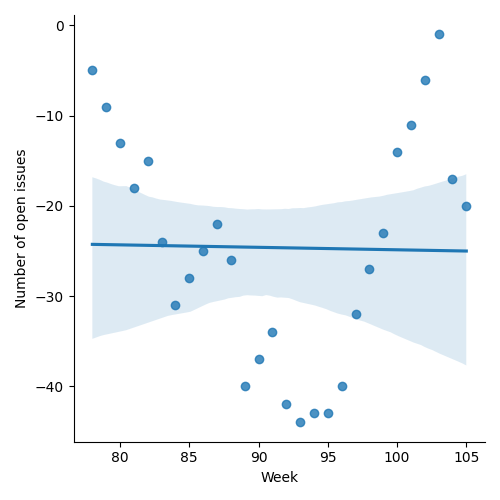
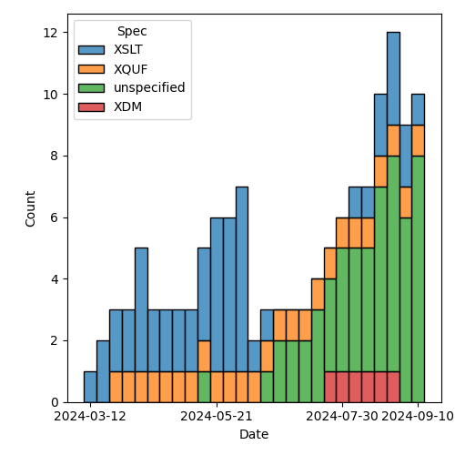
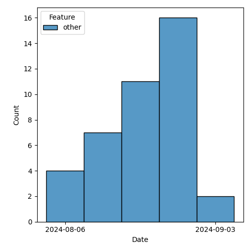

QT4 CG Meeting 090 Minutes 2024-09-17
Meeting index / QT4CG.org / Dashboard / GH Issues / GH Pull Requests
Table of Contents
- Minutes
- Summary of new and continuing actions
[0/7] - 1. Administrivia
- 2. Technical agenda
- 3. Any other business
- 4. Adjourned
Minutes
Approved at meeting 091 on 24 September 2024.
Summary of new and continuing actions [0/7]
[ ]QT4CG-080-07: NW to update the build instructions in the README[ ]QT4CG-082-02: DN to work with MK to come to agreement on the fn:ranks proposal[ ]QT4CG-088-01: NW to consider how best to add a dedication to MSM.[ ]QT4CG-088-03: MK to add an example of duplicate function-annotations being returned.[ ]QT4CG-088-04: [Someone] needs to update the processing model diagram needs vis-a-vis the static typing feature[ ]QT4CG-089-01: CG to draft a PR that attempts to resolve the operators described in #755 to a smaller number of orthogonal choices.[ ]QT4CG-090-01: MK to add an example offn:element-numberthat does multi-part numbering
1. Administrivia
1.1. Roll call [11/12]
Wendell gives regrets.
[X]David J Birnbaum (DB)[X]Reece Dunn (RD) [:15-][X]Sasha Firsov (SF)[X]Christian Grün (CG)[X]Joel Kalvesmaki (JK) [:05-][X]Michael Kay (MK)[X]Juri Leino (JLO)[X]John Lumley (JWL)[X]Dimitre Novatchev (DN)[ ]Wendell Piez (WP)[X]Ed Porter (EP)[X]Norm Tovey-Walsh (NW). Scribe. Chair.
1.2. Accept the agenda
Proposal: Accept the agenda.
Accepted.
1.2.1. Status so far…
These charts have been adjusted so they reflect the preceding six months of work.

Figure 1: “Burn down” chart on open issues

Figure 2: Open issues by specification

Figure 3: Open issues by type
1.3. Approve minutes of the previous meeting
Proposal: Accept the minutes of the previous meeting.
Accepted.
1.4. Next meeting
This next meeting is planned for 24 September. Any regrets?
None heard.
1.5. Review of open action items [2/8]
(Items marked [X] are believed to have been closed via email before this agenda was posted.)
[ ]QT4CG-080-07: NW to update the build instructions in the README[ ]QT4CG-082-02: DN to work with MK to come to agreement on the fn:ranks proposal[X]QT4CG-087-01: DN to update PR #1228 to reflect MK’s compromise and update the vulnerabilities[ ]QT4CG-088-01: NW to consider how best to add a dedication to MSM.[ ]QT4CG-088-03: MK to add an example of duplicate function-annotations being returned.[ ]QT4CG-088-04: [Someone] needs to update the processing model diagram needs vis-a-vis the static typing feature[ ]QT4CG-089-01: CG to draft a PR that attempts to resolve the operators described in #755 to a smaller number of orthogonal choices.[X]QT4CG-089-02: WP to provide a more complete citation for the CRC-32 algorithm.
1.6. Review of open pull requests and issues
1.6.1. Blocked
The following PRs are open but have merge conflicts or comments which suggest they aren’t ready for action.
1.6.2. Merge without discussion
The following PRs are editorial, small, or otherwise appeared to be uncontroversial when the agenda was prepared. The chairs propose that these can be merged without discussion. If you think discussion is necessary, please say so.
- PR #1444: Implement improvement to bibligraphy entry for IEEE 802.3
- PR #1414: XSLT spec abstract, introduction
- PR #1440: 1387 Another tweak to build-uri
Proposed: merge without discussion.
Accepted.
1.6.3. Close without action
It has been proposed that the following issues be closed without action. If you think discussion is necessary, please say so.
- Issue #1389: fn:while-do: Optional error: will not terminate
Proposed: close without further action.
Accepted.
1.6.4. Substantive PRs
The following substantive PRs were open when this agenda was prepared.
- PR #1440: 1387 Another tweak to build-uri
- PR #1439: 1235 Function Identity: Treating function items with identical bodies
- PR #1438: 1322 fn:collation-available (editorial)
- PR #1437: 1325 Variadic System Functions limited to `fn:concat`
- PR #1436: 1323 Function parameters names: $href → $uri
- PR #1435: 1421 fn:unix-time: Revisions
- PR #1434: 1373 XQFO: Editorial
- PR #1433: 1422 fn:hash: Revision
- PR #1432: 1379 Initializing expression: Allow self references
- PR #1431: 1372 Unknown option: FORG0013 → XPTY0004
- PR #1430: 1427 Add element-number function
- PR #1429: 1403 Align type tests
- PR #1364: 1314 Change to type() syntax to fix ambiguity
- PR #1283: 77b Update expressions
2. Technical agenda
2.1. PR #1364: Change to type() syntax to fix ambiguity
See PR #1364
- MK: Removed the feature and changed the examples because the feature was initially ambiguous and my first proposed alternative was controversial.
- JWL: Is this something we’re going to be able to fix?
- MK: I’m hoping to come back to it. Using
instance ofis clumsy and not always possible. (You can’t test a sequence type, for example.) - RD: Would a sequence-of construct work?
- MK: I suggest we leave this until there’s a new proposal.
- DN: What was the actual problem with type?
- MK: You can’t have an NCName after a question mark because that’s a reference to a name in the map.
RD and JWL attempt to explain the ambiguity.
Proposed: Accept this PR.
Accepted.
2.2. PR #1283: 77b: Update expressions
See PR #1283
- MK: I spent a fair bit of time on this today.
Still a work in progress. There’s a dependency on PR #832.
2.3. PR #1429: Align type tests
See PR #1429
- JLO: I just updated it now.
Some discussion of whether or not to wait for the diffs; JLO proposes to show us his local copy.
- JLO: This allows map and array tests to omit the
*.- … I’ve added
AnyMapTestand some examples. - … And I did the same thing for
AnyArrayTest.
- … I’ve added
- DN: Thank you. I’m not sure I understand what is the difference. Why allow both
(*)and()? Do they generate different things? - JLO: For element tests, you can now have
*, so this aligns with the other element tests. - DN: Can’t we have this addition only for the element tests?
- … I think this introduces unnecessary redundancy.
- CG: How do you feel about the element test that allows both variants?
- MK: I think XPath 3.x already allowed the
*. - JLO: No, that’s new in 4.
- RD: That’s because it’s now a name test; previously they only allowed NCName* or *NCName.
They didn’t allow a full name test. That’s now been relaxed, and therefore
*is allowed.
On further inspection, it was a feature in XPath 3.x.
- MK: We have two equivalent syntaxes for
element; what we’re proposing is the same redundancy inmapandarray. - DN: I think I made it clear, I’m against this.
- CG: Editorially, there was an
instance arraytypo theofis missing. - JLO: It would be nice to have
AnyElementTestas a separate token in the grammar.
JLO will clean up the typos and we’ll come back to it next week.
2.4. PR #1430: 1427 Add element-number function
See PR #1430.
- MK: This is a proposal to add a subset of the
xsl:numberfunctionality as a function so that it’s available in the XPath context.
MK reviews the proposal in the PR.
- MK: The default is now the equivalent of “level=any” in XSLT. The
default is to count all the elements with the same element name.
- … One benefit is that it’ll be possible to optimize better than the equivalent XPath expressions.
- JWL: Can the default function be written in XPath?
- MK: You can’t write a function that accesses the value of another argument, that’s the limitation.
- JWL: It might be worth adding the pseudo-function.
- CG: I tried to find use cases for the function, but I wasn’t able to. The examples just return numbers.
- MK: A fully worked example that does multi-part section number seems a little out of scope, but a more robust example would be good.
ACTION QT4CG-090-01: MK to add an example that does multi-part numbering
Some discussion of the parameter names. They’re based on XSLT now, but
within and predicate might be better in this context.
- CG: Perhaps name the function
element-indexinstead ofelement-number? - MK: Well,
element-numbergives it some relationship to XSLT and it is numbering. In a document context, “indexing” is something quite different. - JK: I like this a lot. There are a lot of places where I would have used this.
- … In the signature for the second and third parameters is
(), that should be filled out, shouldn’t it?
- … In the signature for the second and third parameters is
- MK: No, they’re the empty sequence because the default depends on knowing the first argument. This is a semantic default.
- JK: I wonder if we could add notes to express that more explicitly.
- MK: You are supplying an empty sequence, so that’s what you’d get.
- JK: Can’t this be extended to comments, PIs, etc.? Couldn’t this be node-number?
- MK: I’m haunted there by the experience of writing hundreds of tests
for numbering namespace nodes. I’ve never used
xsl:numberfor anything except elements, but there are hundreds of lines of code in Saxon for dealing with the cases that never occur. - JK: I have a use case right now where I would really benefit from being able to number processing instructions.
- DN: I fully agree with CG. This function seems much more needed to
XSLT users. XPath and XQuery users need to see better use cases for it. In the context of
querying, it seems like this doesn’t have a very big potential use.
- … Perhaps this should be an XSLT-only function?
- MK: That’s an interesting point. While we have a feel for what different user communities are doing, I certainly know of users who use XQuery for things that are quite document-like. They have strong elements of both query and output. I’d be reluctant to say XQuery users don’t need this.
- SF: In the UI, I often need to compare XSLT and XPath. Those need to match, we cannot extract
XSLT something that’s independent but still overlapping. (Scribe is confused.)
- … The use case is items inside of XSLT, numbering articles. The actions for what happens on the page are in XPath. They have to use XPath for the selections for the already generated content. The rules inside XSLT and XPath ideally should match.
- MK: Yes, I think I see. There are probably use cases in XForms and perhaps even in XSD.
- CG: I’d like to add that I can very well imagine that there are XQuery use-cases, I just didn’t immediately see how.
Some discussion of the syntax of the $count parameter. Needs fixing.
- RD: There will be use cases for this in XQuery. Different vendors focus on manipulating documents with XQuery. Having this functionality from XSLT available in XQuery would be useful.
- JLO: I’m wondering why the return type is not
xs:boolean. Why is itxs:boolean? - MK: All our predicate functions can return
()asfalse(). - DN: We need to note that this proposal originated from XSLT content. If this function is included in XPath, I’d like to have very good use cases.
MK will revise for next week.
2.5. PR #1432: 1379 Initializing expression: Allow self references
See PR #1432.
CG begins by looking at the examples in the PR discussion.
- CG: The constraint has been relaxed since 1.0. It has gone from
being a static error to a runtime error.
- … My impression is that there’s no real reason to disallow this. You can already do it with functions.
- … My PR removes the restriction.
- JWL: Could this get really complicated with a map that has recursive invocations in the map?
- CG: I think that can happen, you would just get a stack overflow.
- JWL: You’re really on your own if you do this.
- MK: We do currently allow two variables to mutually refer to each other. It’s just a dynamic error if you can’t avoid a loop.
Some discussion of circularities. Self-circularity just becomes a special case.
- RD: I was wondering the same thing. Was this introduced to provent circularities? But you do end up with circular references across variables. I’m happy for this to fall under that umbrella.
- MK: I think it was historic, there was a static rule about circular dependencies between variables but we forgot about the self-dependency.
- CG: Things have changed a lot since 1.0.
- DN: I fully support the concern raised by JWL. This would make it very easy to make mistakes and introduce circular references in initialization. I don’t think this is a good design. It’s proposed for XQuery only, so maybe I shouldn’t care so much. But it looks like it could make programmer’s lives more difficult.
- CG: It’s exactly the same for recursive functions. A tail-optimized recursive function can just be an infinite loop.
- DN: Yes, but it’s a good design principle to make dangerous things difficult to express.
- JLO: Just as a reaction, this will make my life as an XQuery programmer easier. I fully support it.
Proposed: accept this PR.
Accepted.
2.6. PR #1431: 1372 Unknown option: FORG0013 → XPTY0004
See PR #1431.
- CG: It’s just a different error code.
- JLO: I think this deserves an error code of its own.
- CG: I think in the future we may use records anyway and that would
result in this code anyway because it would be in coercion rules.
- … Pragmatically, this is also how our implementation works.
- … This is a really special case that doesn’t seem justified.
- DN: Not directly to this proposal, but the current naming of errors is opaque to me.
Some discussion of the names.
Proposed: accept this PR.
Accepted.
3. Any other business
- None heard